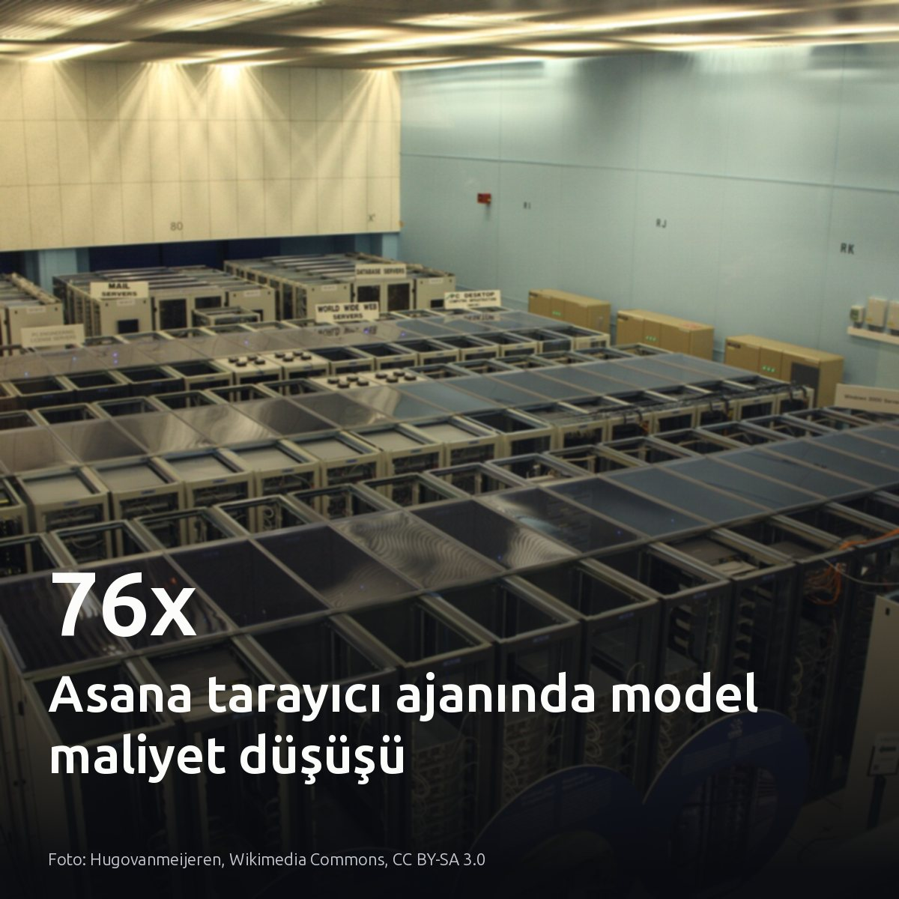
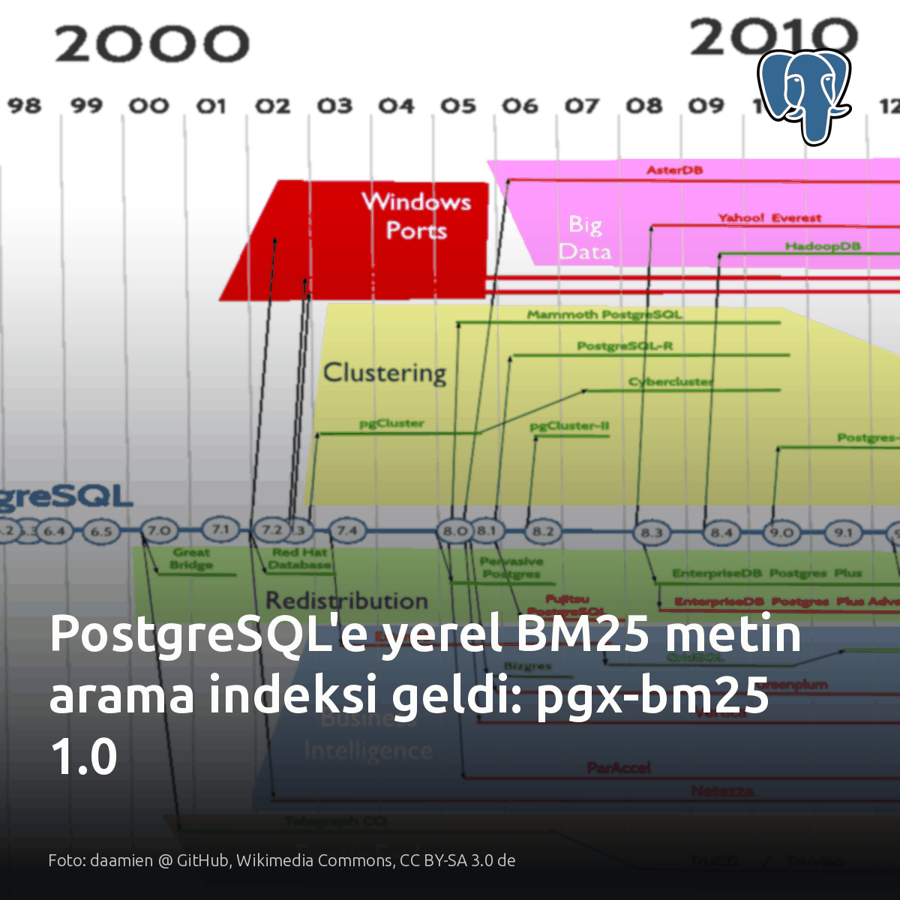
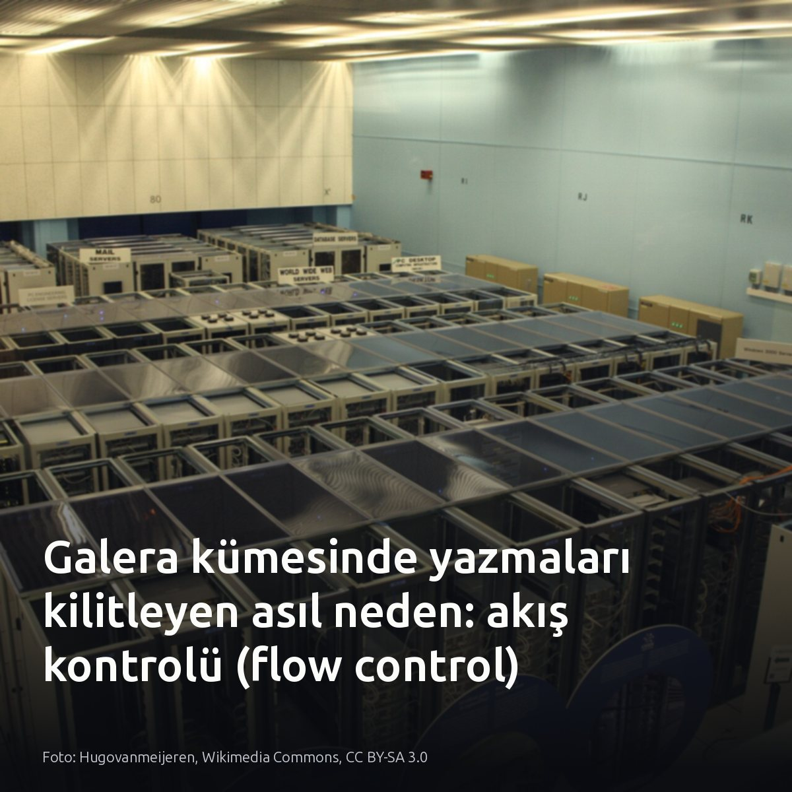
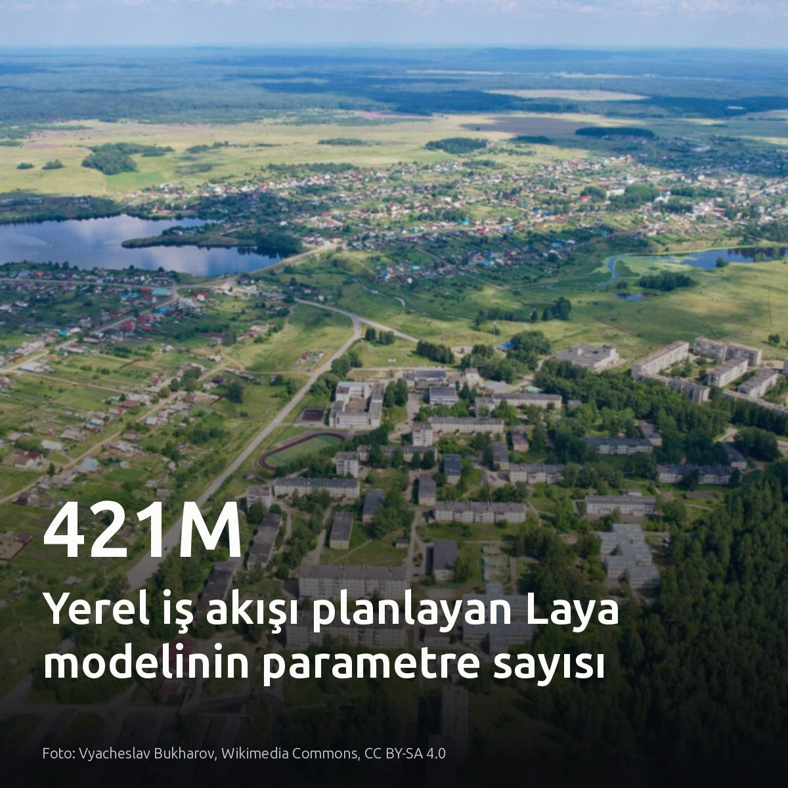
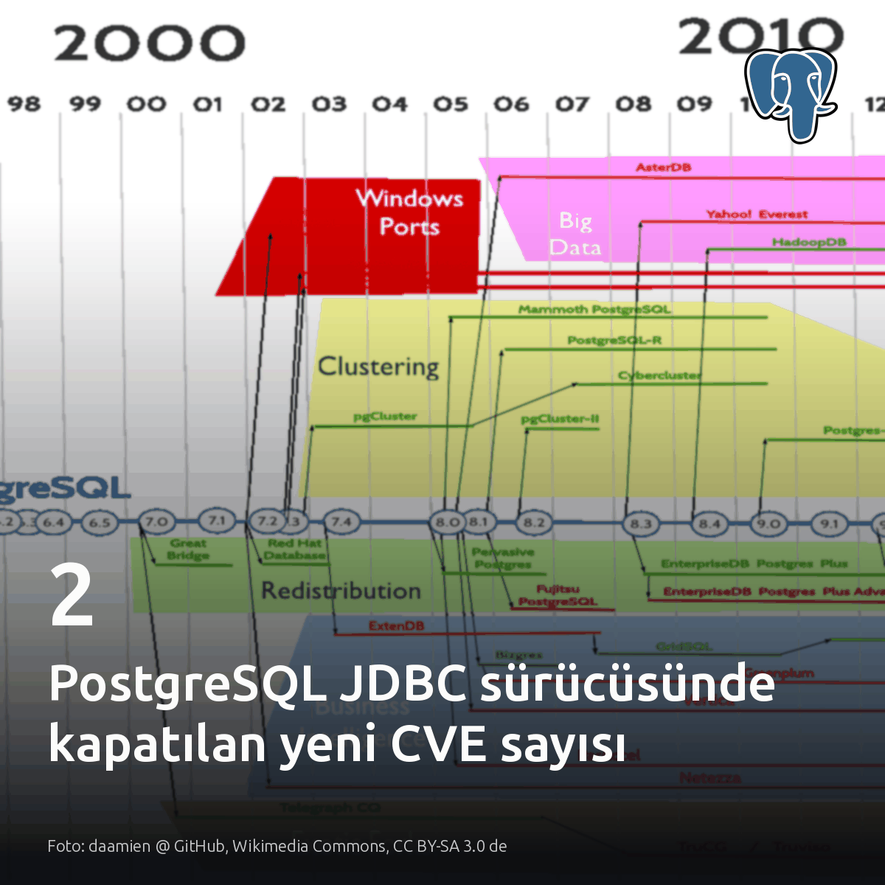

Metni kopyala, kartı indir, LinkedIn'de yapıştır. Bağlantılar gönderiye değil ilk yoruma.

Asana, tarayıcı ajanı testlerinde model maliyetini 76 kat düşürüp hızı 5 katına çıkardı. Çalıştırma maliyeti 0,47 dolara indi. Ajan iş yüklerinde genel amaçlı modeller yerine uzmanlaşmış hafif katmanlara geçmek, altyapı faturasını doğrudan sürdürülebilir kılıyor. #aiagents #llmops #infrastructureKartı indir
Kaynak ve test detayları: • OpenAI & Asana vaka analizi: https://openai.com/index/asana-browser-agent

BM25 sıralaması için veriyi PostgreSQL dışına çıkarma zorunluluğu pgx-bm25 1.0 ile bitti. Ayrı bir arama kümesi şart sanılıyordu. Eklenti, PostgreSQL 17 ve 18 üzerinde index'i doğrudan kendi sayfalarında tutarak WAL kaydı, çökme kurtarma ve fiziksel çoğaltma güvencesini çekirdekten alıyor. LIMIT 10 gibi sorgularda blok-max WAND optimizasyonu sayesinde eşleşen tüm belgeleri puanlama yükü de kalkıyor. Harici çalışma ortamı yönetmeden veritabanı içinde sıralı arama yapılabiliyor. #postgresql #bm25 #databaseKartı indir
Kaynaklar ve detaylar: - Görsel: daamien @ GitHub, Wikimedia Commons, CC BY-SA 3.0 de - pgx-bm25 1.0: https://www.postgresql.org/about/news/pgx-bm25-10-bm25-ranked-full-text-search-as-a-native-postgresql-index-3396/

Galera kümesinde 20 dakikalık kesintiyi çöken bir sunucu değil, tek bir yavaş disk başlatabiliyor. Senkron replikasyonda her commit kümedeki tüm düğümlerde onaylanır; ancak verinin diske yazılma hızı her sunucunun donanımına bağlıdır. Yavaş üyenin yerel kuyruğu dolduğunda akış kontrolü tetiklenir. Geciken düğüm bu kuyruğu eritemediği sürece kümedeki tüm sağlıklı üyelerin yazma işlemleri askıya alınır. Loglarda hiçbir hata görünmez. İstemci yazmaları zaman aşımına uğrarken wsrep_flow_control_sent sayacı 0 değerinde kalabilir. İzleme araçları alarm üretmediğinden, kesinti ancak bir operatör o yavaş düğümü sonlandırdığında çözülür. #galeracluster #highavailability #databaseKartı indir
Kaynaklar ve inceleme: - Görsel kaynağı: Hugovanmeijeren, Wikimedia Commons (CC BY-SA 3.0) - Percona analizi: https://www.percona.com/blog/your-galera-clusters-hardest-problem-was-never-the-replication-library/

Ajan iş akışlarını yönlendirmek için devasa modeller yerine yerelde 421M parametre yetiyor. Buradaki tek ölçü gecikmedir. Yönlendirme adımlarında bulut API'sine gitmek ağ gecikmesi yaratırken, 16 GB bellekli bir dizüstünde koşan Laya tüm trafiği içeride tutuyor. Karmaşık muhakeme için büyük modeller şart; ancak iş akışını 11 desene göre dağıtmak için küçük bir yerel planlayıcı yetiyor. Kendi yönlendirme hattınızdaki ağ gecikmesine ve API çağrılarına bakın. #localllm #multiagent #aiinfraKartı indir
Kaynaklar ve inceleme bağlantıları: Görsel ve model mimarisi (Laya): https://medium.com/@prashantrj.4535/fine-tuning-laya-a-system-one-model-to-plan-multi-agent-work-e33e0f96bb89?source=rss------large_language_models-5 Laya Studio depo adresi: https://github.com/Hantlowt/laya-studio

PostgreSQL JDBC sürücüsündeki 2 yeni güvenlik açığı doğrudan istemci tarafını hedef alıyor. Risk veritabanı sunucusunda değil, istemcide. Yayımlanan 42.7.14 güvenlik sürümü, requireAuth kuralının sessizce atlanmasını ve eksik değerler doldurulurken önceki sorgu baytlarının saklanmasını gideriyor. Bakılması gereken yer veritabanı logları değil; uygulama pod'larındaki sürücü bağımlılıkları. Bu açıklar, Java dışındaki çalışma zamanlarını veya doğrudan libpq kullanan servisleri kapsamıyor. #postgresql #jdbc #securityKartı indir
Kaynaklar ve sürüm duyuruları: - PostgreSQL duyurusu ve CVE detayları: https://www.postgresql.org/about/news/2026-10-07-postgresql-jdbc-42714-security-update-for-multiple-cves-3399/ - PostgreSQL JDBC sürüm notları (42.7.14): https://jdbc.postgresql.org/